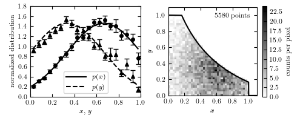

Luminosity function code on toy data¶
Figure 4.9.
An example of using Lynden-Bell’s C- method to estimate a bivariate distribution from a truncated sample. The lines in the left panel show the true one-dimensional distributions of x and y (truncated Gaussian distributions). The two-dimensional distribution is assumed to be separable; see eq. 4.85. A realization of the distribution is shown in the right panel, with a truncation given by the solid line. The points in the left panel are computed from the truncated data set using the C- method, with error bars from 20 bootstrap resamples.
{kind=link}
# Author: Jake VanderPlas
# License: BSD
# The figure produced by this code is published in the textbook
# "Statistics, Data Mining, and Machine Learning in Astronomy" (2013)
# For more information, see http://astroML.github.com
# To report a bug or issue, use the following forum:
# https://groups.google.com/forum/#!forum/astroml-general
import numpy as np
from matplotlib import pyplot as plt
from scipy import stats
from astroML.lumfunc import bootstrap_Cminus
#----------------------------------------------------------------------
# This function adjusts matplotlib settings for a uniform feel in the textbook.
# Note that with usetex=True, fonts are rendered with LaTeX. This may
# result in an error if LaTeX is not installed on your system. In that case,
# you can set usetex to False.
if "setup_text_plots" not in globals():
from astroML.plotting import setup_text_plots
setup_text_plots(fontsize=8, usetex=True)
#------------------------------------------------------------
# Define and sample our distributions
N = 10000
np.random.seed(42)
# Define the input distributions for x and y
x_pdf = stats.truncnorm(-2, 1, 0.66666, 0.33333)
y_pdf = stats.truncnorm(-1, 2, 0.33333, 0.33333)
x = x_pdf.rvs(N)
y = y_pdf.rvs(N)
# define the truncation: we'll design this to be symmetric
# so that xmax(y) = max_func(y)
# and ymax(x) = max_func(x)
max_func = lambda t: 1. / (0.5 + t) - 0.5
xmax = max_func(y)
xmax[xmax > 1] = 1 # cutoff at x=1
ymax = max_func(x)
ymax[ymax > 1] = 1 # cutoff at y=1
# truncate the data
flag = (x < xmax) & (y < ymax)
x = x[flag]
y = y[flag]
xmax = xmax[flag]
ymax = ymax[flag]
x_fit = np.linspace(0, 1, 21)
y_fit = np.linspace(0, 1, 21)
#------------------------------------------------------------
# compute the Cminus distributions (with bootstrap)
x_dist, dx_dist, y_dist, dy_dist = bootstrap_Cminus(x, y, xmax, ymax,
x_fit, y_fit,
Nbootstraps=20,
normalize=True)
x_mid = 0.5 * (x_fit[1:] + x_fit[:-1])
y_mid = 0.5 * (y_fit[1:] + y_fit[:-1])
#------------------------------------------------------------
# Plot the results
fig = plt.figure(figsize=(5, 2))
fig.subplots_adjust(bottom=0.2, top=0.95,
left=0.1, right=0.92, wspace=0.25)
# First subplot is the true & inferred 1D distributions
ax = fig.add_subplot(121)
ax.plot(x_mid, x_pdf.pdf(x_mid), '-k', label='$p(x)$')
ax.plot(y_mid, y_pdf.pdf(y_mid), '--k', label='$p(y)$')
ax.legend(loc='lower center')
ax.errorbar(x_mid, x_dist, dx_dist, fmt='ok', ecolor='k', lw=1, ms=4)
ax.errorbar(y_mid, y_dist, dy_dist, fmt='^k', ecolor='k', lw=1, ms=4)
ax.set_ylim(0, 1.8)
ax.set_xlim(0, 1)
ax.set_xlabel('$x$, $y$')
ax.set_ylabel('normalized distribution')
# Second subplot is the "observed" 2D distribution
ax = fig.add_subplot(122)
H, xb, yb = np.histogram2d(x, y, bins=np.linspace(0, 1, 41))
plt.imshow(H.T, origin='lower', interpolation='nearest',
extent=[0, 1, 0, 1], cmap=plt.cm.binary)
cb = plt.colorbar()
x_limit = np.linspace(-0.1, 1.1, 1000)
y_limit = max_func(x_limit)
x_limit[y_limit > 1] = 0
y_limit[x_limit > 1] = 0
ax.plot(x_limit, y_limit, '-k')
ax.set_xlim(0, 1.1)
ax.set_ylim(0, 1.1)
ax.set_xlabel('$x$')
ax.set_ylabel('$y$')
cb.set_label('counts per pixel')
ax.text(0.93, 0.93, '%i points' % len(x), ha='right', va='top',
transform=ax.transAxes)
plt.show()